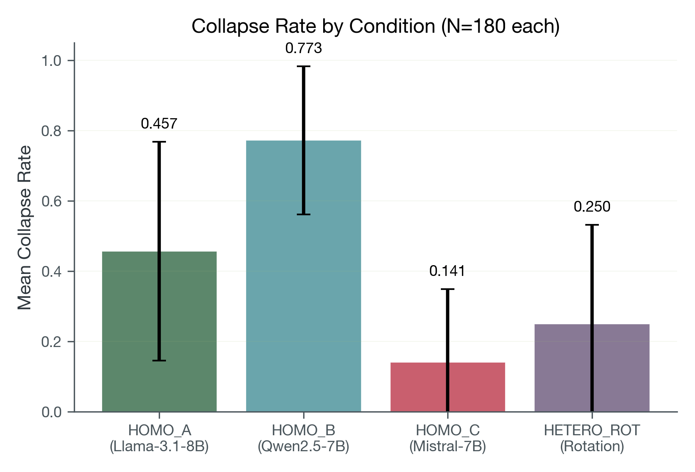

Abstract
We ran a preregistered baseline study of multi-turn collapse dynamics across four interaction conditions (HOMO_A, HOMO_B, HOMO_C, HETERO_ROT). Confirmatory baseline execution closed at 720/720 unique successful tuples with clean protocol integrity. The preregistered detector reliability audit did not meet its Cohen’s κ threshold (κ=0.566, threshold 0.80), so results are presented with transparent limitations: descriptive and condition-comparative conclusions only, without claiming detector reliability validation.
How collapse is defined (locked criteria)
We do not label collapse by vibe. A turn is marked as collapsed only when both repetition and low-drift conditions are met under fixed thresholds:
- Repetition: very high semantic similarity to recent turns (adjacent-turn cosine ≥ 0.92 or two-turn-back cosine ≥ 0.90) sustained for at least 3 turns.
- Low drift: semantic drift remains small (d1 ≤ 0.08 and d2 ≤ 0.10, where drift = 1 − cosine similarity).
- Locked rule: thresholds were fixed before final analysis and not tuned after seeing outcome patterns.
Study setup
- Design: 4 conditions × 36 seeds × 5 repeats = 720 target tuples.
- Execution status: 720/720 successful tuples.
- Protocol integrity: all successful runs at 40 turns, no early-stop violations.
- Primary output: condition-level collapse-rate comparisons under a frozen detector definition.
Condition mapping (model identity)
| Condition | Model setup |
|---|---|
| HOMO_A | Llama-3.1-8B-Instruct self-play (same model on both sides) |
| HOMO_B | Qwen2.5-7B-Instruct self-play (same model on both sides) |
| HOMO_C | Mistral-7B-Instruct-v0.3 self-play (same model on both sides) |
| HETERO_ROT | Round-robin heterogeneous rotation across the three model families |
What collapse looks like in plain language
The core question is simple: when two chat models keep talking for 40 turns, do they keep producing meaningfully new content, or do they fall into repetitive loops?
Below are representative excerpts selected from raw turn logs after scanning all 180 cached trajectories.
Example A — strong repetition loop (HOMO_B: Qwen self-play)
Turn 24: “And there you have it! The function absolutely nails it, delivering the exact value we were hoping for ...”
Turn 39: “Got it! Here's your comment: And there you have it! The function absolutely nails it ...”
Interpretation: near-identical template reuse over long spans, which is exactly the collapse behavior this benchmark is designed to capture.
Example B — low-collapse trajectory (HOMO_C: Mistral self-play)
Turn 24: “Explainability and transparency are also important for regulatory compliance ...”
Turn 39: “Thank you ... don't hesitate to reach out if you have other questions ...”
Interpretation: still topically related, but content continues to move and reframe rather than locking into one repeated response shell.
Example C — intermediate pattern (HETERO_ROT: heterogeneous rotation)
Turn 30: “By working together, we can make a significant difference ...”
Turn 39: “I hope this document provided a useful framework ...”
Interpretation: some thematic repetition, but less rigid template-locking than high-collapse homogeneous runs.
Key baseline results



Interpretation scope
| Claim type | Status | Scope |
|---|---|---|
| Baseline execution closure | Supported | 720/720 tuple completion with protocol integrity checks. |
| Condition-comparative collapse patterns | Supported (descriptive) | Reported under locked detector outputs. |
| Detector reliability validation | Not supported | Preregistered κ gate not met (0.566 < 0.80). |
Limitations
- Reliability gate was not met; no confirmatory detector-validation claim is made.
- Sensitivity metrics are supplementary and non-gating.
- Conclusions are constrained to baseline descriptive findings.